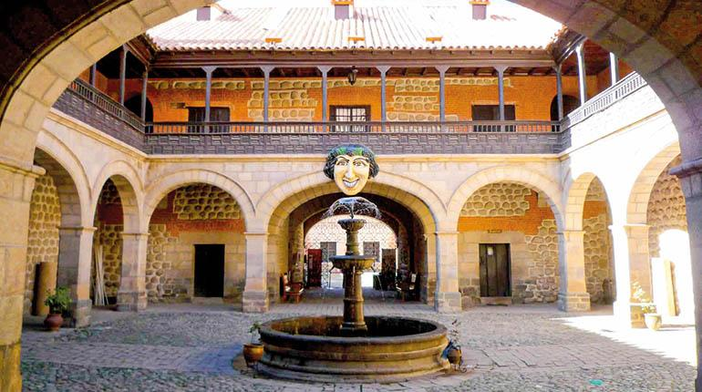
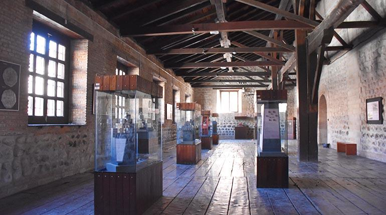
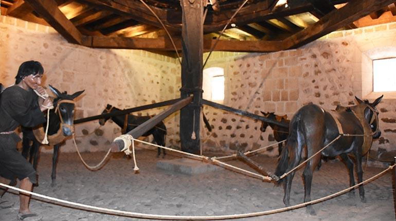
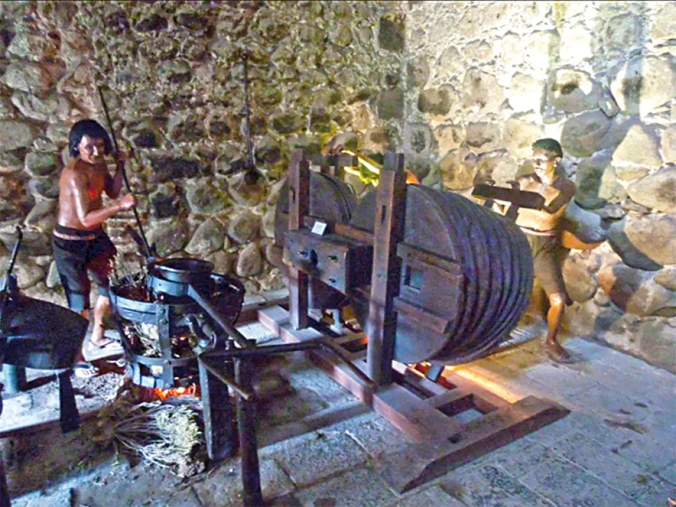
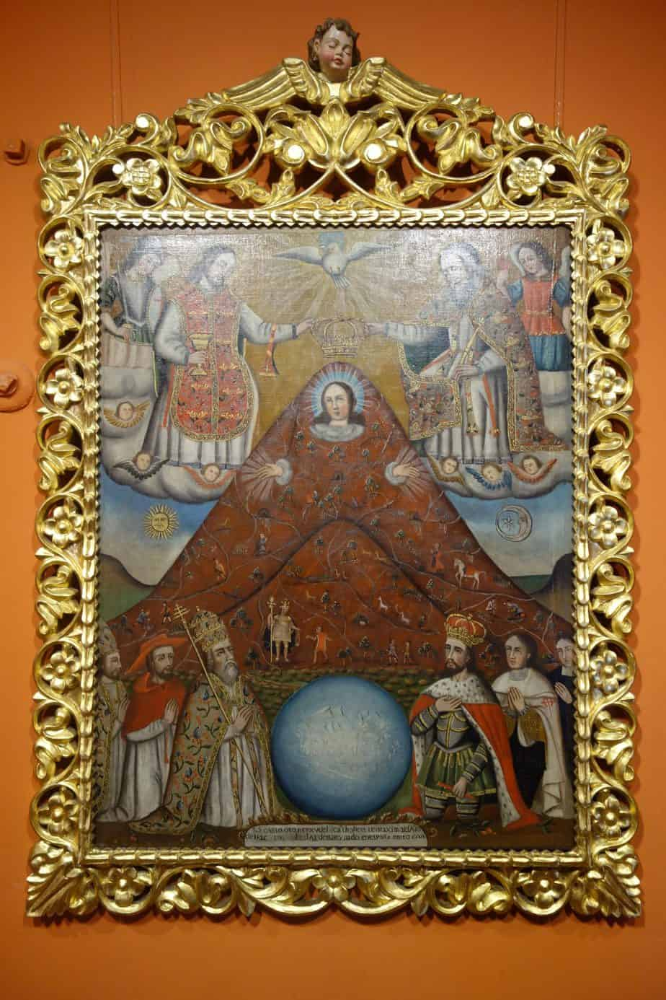
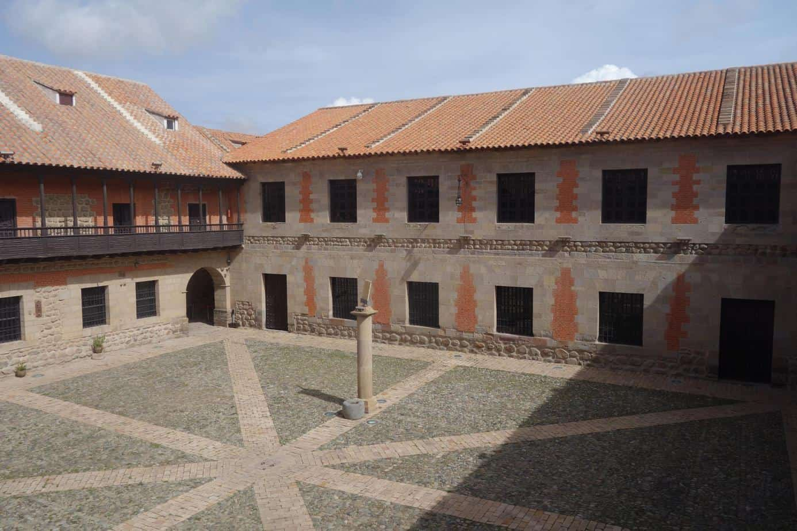
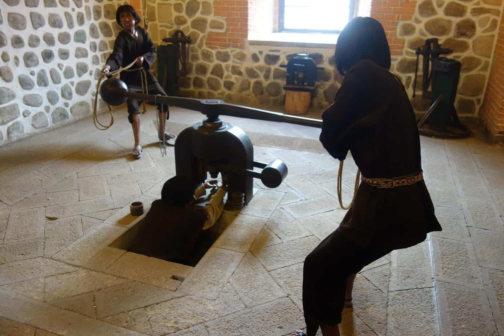
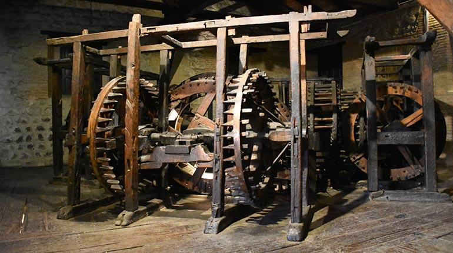
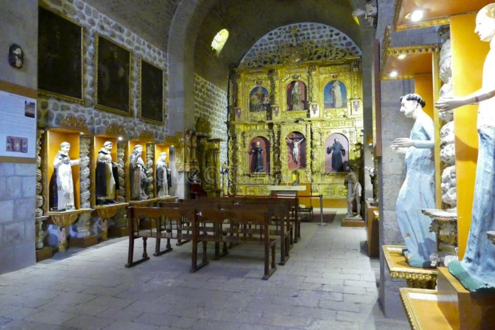

Infraestructura
Fortaleza de piedra de 14 años de construcción. Muros de 1 metro, 5 patios y 200 habitaciones diseñadas para resistir revueltas.
La Casa Nacional de la Moneda es un coloso de piedra que domina el centro histórico de Potosí. Construida entre 1759 y 1773, tardó 14 años en levantarse y ocupa dos hectáreas completas. Su costo fue tan descomunal que el rey Carlos III de España bromeó diciendo que sus muros debían estar hechos de pura plata.
Diseñada como una fortaleza militar, cuenta con muros de piedra de más de un metro de espesor, cinco patios majestuosos y cerca de 200 habitaciones. Las gigantescas vigas de madera que sostienen sus techos fueron traídas a lomo de mula desde los bosques del norte argentino y los valles del sur boliviano, cruzando la cordillera en un viaje mortal para hombres y animales.
Hoy es el museo más importante de Bolivia y la obra civil colonial más grande de América. Cada rincón cuenta la historia de la plata que financió un imperio y del sudor de miles de trabajadores que la hicieron posible.
Espacios más Importantes

Patio Principal
Centro administrativo colonial. Controlaba el flujo de plata que financiaba guerras en Europa.

Salón de Monedas
Exhibe la evolución monetaria de Bolivia. Monedas, billetes y lingotes de 400 años de historia.

Sala de Acuñación
Corazón de la producción. Rodillos españoles y maquinaria para acuñar moneda de plata.

Hornos de Fundición
Infierno de plata y cobre fundido. Chimeneas gigantes evacuaban gases letales día y noche.

Pinacoteca
Lienzos de Melchor Pérez de Holguín. Destaca la Virgen del Cerro fusionada con el Cerro Rico.

Reloj de Sol Colonial
Pilar de piedra con cálculo astronómico. Medía el tiempo exacto incluso en invierno potosino.

Acuñación Manual
Máquina de palanca operada por dos hombres. Sistema de emergencia usado en tiempos de crisis.

Evolución Industrial
Máquinas a vapor de 1869 y motores eléctricos. La modernización de la ceca republicana.

Capilla Interior
Templo de San Antonio de Padua. Refugio espiritual para pedir bendición a la producción minera.